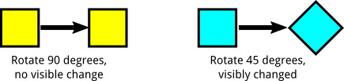
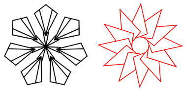
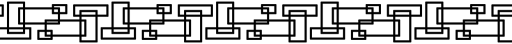
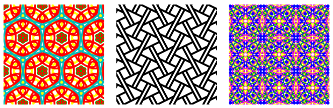

Planar Symmetry Groups
The three web pages wallpaper.html, rosette.html, and frieze.html let the user draw symmetric patterns in the plane. (The wallpaper page is the most interesting.)
In many browsers, you will be able to save your image by right-clicking the drawing area and choosing "Save Image" or "View Image" from the pop-up menu. There is a "Save" button that can save the data that defines the image to a local file on your computer, and there is a "Load" button for reloading the file back into the app. In most browsers, saving and loading files will use file save/open dialogs similar to those used in other programs. (Some browsers still use an older kind of file handling. In those browsers, saving a file will look just like downloading a file from the Internet, and loading a file will look like uploading a file to the Internet.)
The programs should be easy to use, and you can hover your mouse over a button or text input to get more information about it. And you will find a few instructions later on this page. First, however, some explanation of what is meant by symmetry.
A "symmetry" of a pattern is a transformation, or motion, for which the pattern is the same before and after the transformation. As a simple example, if you rotate a square by 90 degrees around its center, the square looks the same before and after the rotation. You can't tell that it's been rotated by looking at it. On the other hand, if you rotate it by 45 degrees, you can see that the square has been tilted:

A square has other symmetries. It can be rotated 180 degrees or 270 degrees, and it can be reflected vertically, horizontally, and through either of its diagonals. We also consider the operation of "doing nothing" to be a symmetry, even though its a trivial case. The "do nothing" operation is called the identity transformation, and it is a symmetry for every pattern. (You might think that rotation through minus 90 degrees is yet another symmetry, but it's considered to be the same as rotation through 270 degrees, since both rotations leave the square in exactly the same position, and not just visibly in the same position. Similarly, a 360 degree rotation is the same as not transforming the square at all.)
The set of all symmetry transformations of a pattern form what is called the "symmetry group" for that pattern. Different patterns have different symmetry groups. The symmetry group of a square is named D4.
For some patterns in the plane, there is a point at the center of the pattern that is left in place by every symmetry. The possible symmetry operations for such a pattern are rotations about the center of the pattern and reflections about a line that passes through the center. The pattern on the left below has 7 rotation symmetries (including the identity transformation) and 7 reflection symmetries. Its symmetry group is called D7. The pattern on the right has 12 rotation symmetries (including the identity) and no reflection symmetries. Its symmetry group is called R12.

We can define rotation groups with any number of rotations. For example, the rotation group R137 is the symmetry group of a pattern that has 137 rotation symmetries and no reflection symmetries. The groups that we get when we add reflection symmetry are called the dihedral groups. For example, the dihedral group D137 is the symmetry group of a pattern that has 137 rotation symmetries and 137 reflection symmetries. The rotation and dihedral groups are sometimes referred to collectively as rosette groups. The web app rosette.html lets you draw patterns with symmetry group Rn or Dn for n up to 20. There is a set of radio buttons that allows you to select the number of rotation symmetries, and there is a checkbox that adds reflection symmetries. When you draw something in the white area, all the symmetric transformations of the thing that you draw are also shown.
If we drop the requirement that a pattern should have a center point that is left in place by all symmetry operations, then we get new kinds of symmetry. In particular, we get translation symmetries. A translation operation moves everything by a certain distance in a certain direction. If a pattern has one translation symmetry, it automatically has an infinite number of them. For example, if moving everything one inch to the right is a symmetry of a pattern, then moving two inches to the right, or three inches, or four inches, ..., are also symmetries. A pattern that has a translation symmetry is necessarily infinite. Here is an example of a pattern that has a horizontal translation symmetry. You have to imagine the pattern extending infinitely to the left and right:

This image was made with the program frieze.html, which lets you draw patterns that have horizontal translation symmetries. The symmetry groups for the patterns in that program are called frieze groups. A frieze group includes translations symmetries in one direction (but not in a second independent direction). Furthermore, the group is "discrete" in the sense that there is a minimum translation distance that is a symmetry. For example, this picture has arbitrarily small horizontal translation symmetries, so its symmetry group is not a frieze group:

With this restriction there are only seven different frieze groups. They have names like p1m1 and pma2 (though other names are also used). In the program, there is a set of radio buttons for selecting the frieze group that you want to use.
The simplest frieze group, p111, has translation symmetry and no other symmetry. The other groups add additional symmetries. For example, p112 adds a 180-degree rotation symmetry. (180 degrees is the only possible rotation symmetry in a frieze group.) p1m1 adds a reflection through a vertical line, while pm11 adds reflection through a horizontal line, and pmm2 adds both. (An "m" stands for "mirror" and indicates a reflection symmetry.) The groups p1a1 and pma2 add another kind of symmetry called a glide reflection. A glide reflection consists of a translation followed by a reflection over a line that is parallel to the direction of translation.
If we add translation symmetry in a second, independent direction, we get wallpaper groups. It turns out that there are only 17 different wallpaper groups (again, considering only discrete groups). The program wallpaper.html has a set of radio buttons that let you pick the group that you want to draw with. Here are three examples from the program, shown at reduced size. These were made using the groups p6m, pgg, and p4m. As always, you have to imagine the patterns extended infinitely in all directions:

If a wallpaper group has any rotational symmetries, then the smallest rotational symmetry must be one of 180, 120, 90, or 60 degrees. A wallpaper group can also have reflection symmetries and glide reflection symmetries. An "m" in the group name indicates a reflection symmetry. A "g" indicates a glide reflection symmetry.
For a wallpaper group, the pattern can be made out of translated copies of a basic area, whose shape can be a rectangle, a square, or a parallelogram. There are input boxes at the top of the program that affect the shape of the basic area. There is always a "Translation amount" input box, which gives the horizontal size of the basic area. That is, it is the size of the smallest horizontal translation symmetry (in pixels). For the first eight groups, the size of the smallest translation in the second direction can be different from the horizontal translation size. For those groups, there is a second input box, "2nd Translation", that gives the vertical size of the basic area. For the groups p1 and p2, the basic area can be a parallelogram. For those two groups, there is a third input box, "Row Offset", that gives the horizontal offset of one row of copies of the basic area from the row above.
For the last five groups, the basic area can be taken to be a parallelogram (actually a rhombus), and the Translation Amount specifies the length of a side of that parallelogram. However, visually, it is more natural to see the pattern as made up of regular hexagons. (Each of the hexagons contains three of the parallelograms.)
The "Show Grid" option at the bottom of the program draws thin lines that divide the drawing region into basic areas. For the last five groups, the grid divides the drawing area into triangles; a basic parallelogram is made up of two of those triangles, and a basic hexagon is made up of six triangles.
For more information about symmetry groups of patterns in the plane, you can check out the Wikipedia articles on Wallpaper Groups, Frieze Groups, and Dihedral Groups.